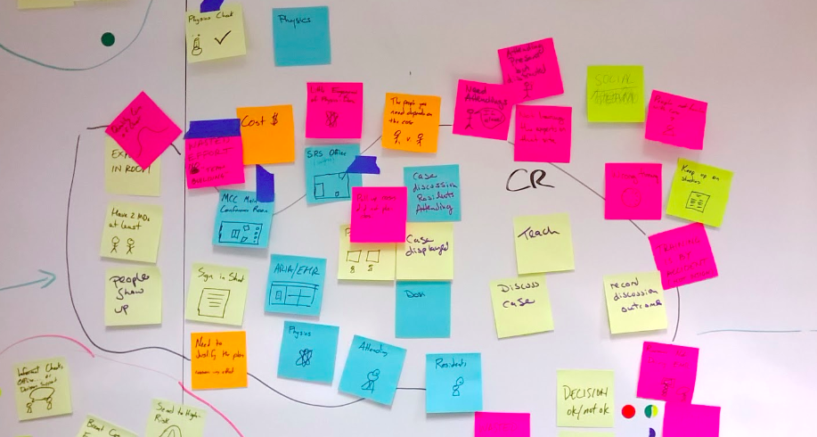
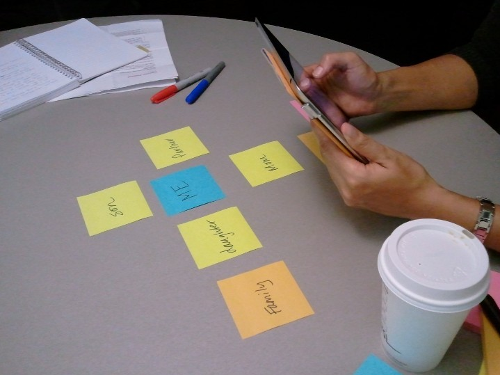
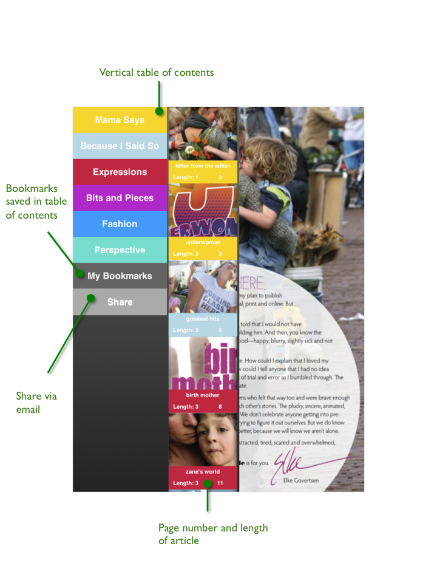

Mamalode
How can an iPad reader facilitate support among mothers?
Background
Tablets have the opportunity to revolutionize how magazines are distributed and read. I worked with General UI, a Seattle based developer, and three other Masters students at the University of Washington in designing an iPad magazine reader for Mamalode. Mamalode is a Missoula, MT based magazine for mothers seeking to provide networking and support for mothers.
Process
- Semi-Structured Interview - Five mothers were interviewed regarding their views on mothering, reading habits, and use of technology.
- Social Network Mapping - Five mothers were asked to map and explain their social networks.
- Ideation - Over 200 product ideas were spawned from our user research.
- Prototype - The best ideas from our ideation were prototyped in an HTML/CSS/jQuery prototype of an iPad magazine reader.
- Usability Testing - Three users tested the usability of our prototype using an iPad. Each user was given a series of tasks to complete, and modifications were made to the prototype based on the usability testing results.
Results
- Mothers read opportunistically
- Mothers have tight-knit support networks and share information about mothering selectively
- Mothers want time for reflective reading, but often feel guilty for taking time away from their families to read
- Mothers want magazine content to be relevant to their interests, their children's ages
- Mothers like relevant advertisements
- The iPad's microphone, camera, and keyboard afford a richer interaction with magazine content, especially for a magazine like Mamalode which prints reader submissions
Prototype
Our prototype may be accessed at http://nkkl.github.com/Mamalode-Prototype/
General UI is currently using our user research and prototype to propose a second phase of application development to Mamalode.
Images

Affinity Diagramming

Semi-Structured Interview

Digital Prototype